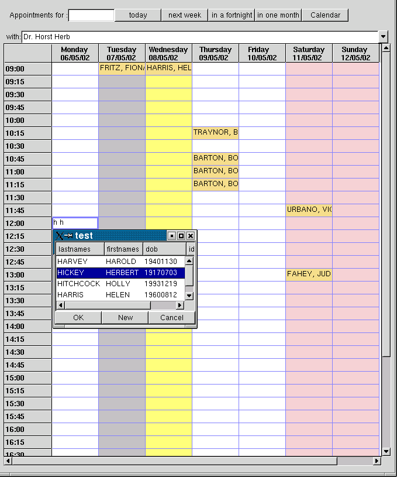
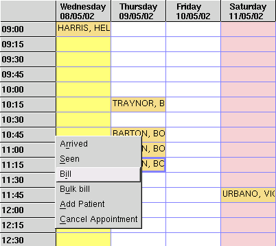

5.13. Appointment book
5.13.1. Functionality
The appointment book is aimed for front-desk staff. It allows to make, edit and cancel appointments. The doctors can view the appointment list too (who is in the waiting room?) or give appointments without interfering with the receptionists. It can be used as a time tracking tool, too as it allows to keep track of when a patient
has booked
for when he has been booked
when the patient arrived
when and how long the patient has been seen
It also can fill in as a interface towards the billing package.
5.13.2. The "schedule widget"
Central unit of the appoinment book is the schedule widget - a spreadsheet like GUI control. Within the appointment book framework, any number of schedules can be displayed simultaneously (for example one for each doctor in a practice). Date selection controls in the framework sterr all schedule widgets simultaneously - taht allows to quickly page through the weeks to see which doctor could still fit a patient in.
"Today" is marked yellow, weekend days pink, and days where a doctor is not available are marked in grey. Of course, all colours are configurable.
Data entry is simple & efficient: after selecting a vacant time slot , one starts typing a few characters of a surname; if there might be many patients with the same surname, one can enter a few characters of a given name too, separated by a space. If the appointment should be longer than standard, keying in a '+' for each pre-defined increment will do the trick. On Enter, a small dialogue pops up and takes obver the cursor. It displays all matches from the patient data base (matching surname fraction and optionally given name fraction), the cursor is already positioned on the first entry. Enter confirms, cursor keys move the selection, Alt-n allows to enter a new patient. Thus, in the most common cse the appointment is made with 5-6 keystrokes : 2 first characters of the surname, 2 first characters of the given name, Enter.

5.13.3. Calendar navigation
A few convenience buttons allow navigation between weeks and months around the current date with a single keystroke or mouse click. For more demanding date entry, a calendar popup is provided. Alt+c pops it up, cursor keys select, enter confirms. alternatively, the mouse can be used.

This images displays two doctors simultaneously. Any number of doctors can be displayed, provided the screen is large enough for satisfactory visualization. Alternatively, each schedule widget has a combo box on top which allows to select any doctor available.
5.13.4. Context sensitive popup menus

By right clicking a cell (or typing Alt-o) a popup menu will offer a few choices what else we can do with the booked patient. This is expandable via plugin architecture.
5.13.5. TO DO:
testing
write proper documentation
popup menu functions not implemented yet
new patient dialog not implemented yet
billing package needs to be written
printing